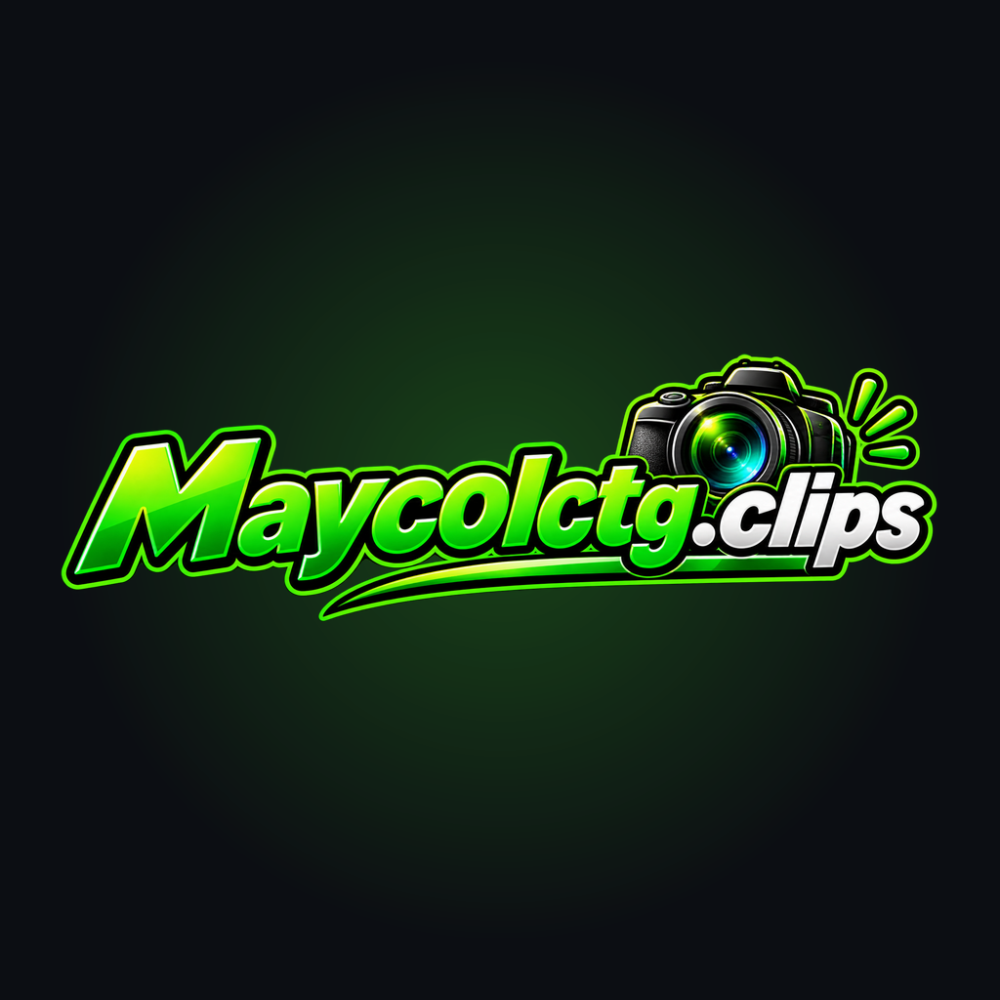

Términos de servicio
1. Qué es Clip Studio
Clip Studio es una herramienta de escritorio que se ejecuta en el ordenador del usuario para editar clips verticales y, si el usuario lo decide, publicarlos en su propia cuenta de TikTok.
2. Uso permitido
- Solo puedes publicar contenido que tengas derecho a usar (propio, con licencia o de campañas que te lo autoricen).
- Debes cumplir las Condiciones del servicio y las Normas de la comunidad de TikTok.
- No puedes usar Clip Studio para spam, suplantación de identidad ni contenido ilegal.
3. Tu cuenta de TikTok
La conexión con TikTok se hace con el inicio de sesión oficial de TikTok. Clip Studio solo publica cuando tú lo pides y puedes desconectar tu cuenta en cualquier momento desde la aplicación o desde los ajustes de TikTok.
4. Sin garantías
Clip Studio se ofrece "tal cual", sin garantías. No somos responsables del contenido que publiques ni de decisiones de TikTok sobre ese contenido.
5. Cambios y contacto
Podemos actualizar estos términos; la fecha de arriba indica la última versión. Contacto: github.com/mcasadiegos/KLIPPING/issues.
English summary
Clip Studio is a desktop tool that runs on the user's computer to edit vertical clips and, only when the user chooses, publish them to the user's own TikTok account. You may only publish content you have the right to use and must follow TikTok's Terms of Service and Community Guidelines; spam, impersonation and illegal content are not allowed. The TikTok connection uses TikTok's official login, posts only on the user's request and can be revoked at any time. The software is provided "as is", without warranties. Contact: github.com/mcasadiegos/KLIPPING/issues.